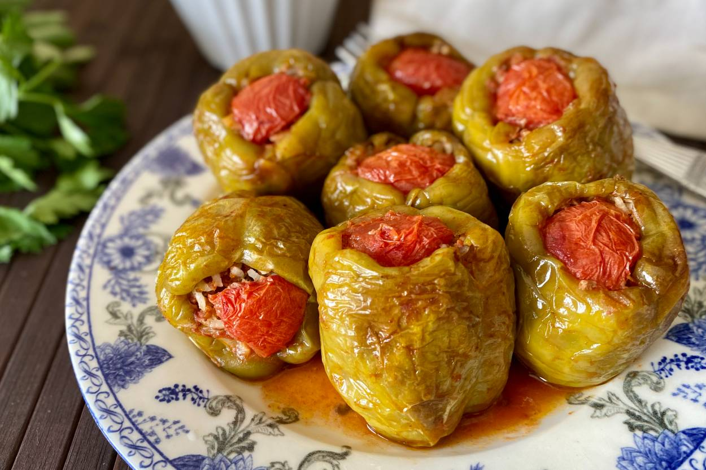

Dolma

Description
"Biber dolmasi" is a Turkish dish featuring bell peppers stuffed with a mixture of seasoned ground meat, rice, and aromatic herbs. To prepare it, first, combine ground meat, rice, onions, tomato paste, and herbs. Fill the hollowed-out peppers with this mixture. Then, cook the stuffed peppers in a pot with water until the rice is tender and the peppers are soft. Serve warm for a flavorful Turkish meal.
Ingredients
- Bell peppers (green or red, preferably medium-sized)
- Ground beef or a mixture of beef and lamb
- Rice (long-grain or medium-grain, rinsed)
- Onion, finely chopped
- Tomato paste
- Fresh parsley, finely chopped
- Fresh mint, finely chopped (optional)
- Dried mint
- Ground black pepper
- Ground cumin
- Red pepper flakes (optional)
- Salt
- Olive oil
- Water
Instructions
- Prepare the peppers: Cut the tops off the bell peppers and remove the seeds and membranes inside. Rinse them thoroughly and set them aside.
- Prepare the filling: In a large mixing bowl, combine the ground beef (or beef and lamb mixture), rinsed rice, finely chopped onion, tomato paste, fresh parsley, and optional fresh mint. Season the mixture with ground black pepper, ground cumin, dried mint, red pepper flakes (if desired), and salt. Mix everything together thoroughly.
- Stuff the peppers: Carefully stuff each bell pepper with the filling mixture, leaving some space at the top as the rice will expand during cooking. Place the stuffed peppers upright in a large cooking pot.
- Cook the dolmas: Drizzle some olive oil over the stuffed peppers. Add water to the pot until it covers about half of the peppers. Place a heavy heat-resistant plate or a layer of vine leaves on top of the peppers to keep them in place during cooking. Cover the pot with a lid.
- Simmer: Cook the stuffed peppers over low to medium heat for about 30-40 minutes, or until the rice is fully cooked and the peppers are tender. Check occasionally and add more water if necessary to prevent burning.
- Serve: Once the dolmas are cooked, remove them from the pot and let them cool slightly. Serve them warm, garnished with additional fresh parsley and a drizzle of olive oil if desired.
Return to the Menu